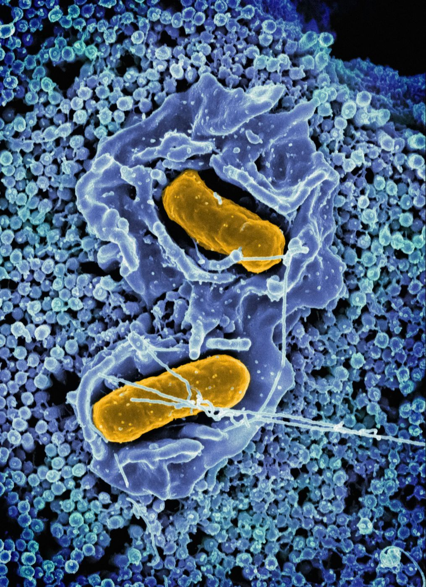

Stress affecting your stomach, craving certain foods, or feeling mentally drained for no obvious reason? The answer may involve the trillions of microbes living inside your gut.
You will be surprised to know that there are tiny organisms in your gut that do something more than help with digestion. They constantly communicate with your body and brain. This connection is called the gut-brain axis, which is helping scientists understand how gut bacteria affect your brain and influence areas like mood, stress, and overall well-being.
Recent gut microbiome research suggests that the relationship between the gut microbiome and brain may be far more important than we think.
Meet the Trillions Living Inside You: What Is the Gut Microbiome?

While the idea of having billions of microbes living inside you may sound strange, they play essential roles in keeping your body healthy. Together, we call them the gut microbiome.
We always associate bacteria with infections and diseases. However, modern gut microbiome research has revealed a much more complex picture. Many gut bacteria help break down dietary fiber, produce useful compounds, support digestion, and interact with the immune system.
Research published in the New England Journal of Medicine highlights how the gut microbiome functions as a dynamic ecosystem that influences multiple aspects of human physiology.
Scientists are now discovering that these tiny organisms do much more than influence the gut. Through their communication with other body systems, they play a role in the relationship between the gut microbiome and brain.
The Gut-Brain Axis: Your Body's Hidden Communication Highway
Your gut and brain may seem like two completely separate systems, but they are constantly exchanging information. This communication network, known as the gut-brain axis, links your digestive system to the brain through nerves, hormones, immune signals, and microbial compounds — a relationship examined in depth in this Physiological Reviews paper on the microbiota-gut-brain axis.
One of the major pathways involved is the vagus nerve, a long communication channel that sends signals between your gut and brain. This pathway influences how our brain responds to different situations, including stress and emotional experiences.
But the conversation does not happen only through nerves. Gut bacteria also produce molecules such as short-chain fatty acids and other chemical messengers that can affect immune activity and brain function.
The growing field of gut microbiome research reveals why the gut is sometimes called the "second brain" and why understanding the gut-brain axis can change how we approach health in the future.
How Gut Bacteria Affect Your Brain, Mood, and Daily Life
Have you ever noticed that stress can upset your stomach, or that a poor diet can leave you feeling tired and unfocused? These everyday experiences are part of what makes the connection between gut bacteria and mental health so fascinating.
Scientists are increasingly exploring how gut bacteria affect your brain and how these tiny organisms may influence mood, stress, and cognitive function.
One way this happens is through the production of chemical compounds that interact with the nervous system. Some gut microbes help produce or regulate molecules linked to brain function, including neurotransmitters such as serotonin and GABA. While most serotonin is produced in the digestive system, researchers are still investigating exactly how gut-derived signals influence serotonin activity in the brain.
The Future of Gut Microbiome Research
Scientists have only begun to uncover the true potential of the gut microbiome. Instead of asking which bacteria are present, researchers are now exploring what these microbes do and how they can be used to improve human health. This shift is driving exciting advances in gut microbiome research and the development of personalized medicine.
One emerging area is psychobiotics — beneficial bacteria that may one day support mental well-being by influencing the gut-brain axis. Researchers are also investigating personalized nutrition, in which a person's diet is designed according to their unique microbiome.
Artificial intelligence and DNA sequencing are being used to analyze the gut microbiome and brain connection, to understand why people respond differently to the same foods, medications, or treatments.
Frequently Asked Questions
Can gut bacteria really affect your brain?
Yes, research suggests they can. Through the gut-brain axis, gut bacteria communicate with your brain using nerves, immune signals, and chemical messengers. While they don't control your thoughts or emotions, they do influence processes related to mood, stress, and cognitive function.
What foods help improve the gut microbiome?
A diet rich in fiber is one of the best ways to support a healthy gut microbiome. Fruits, vegetables, whole grains, legumes, nuts, seeds, and fermented foods like yogurt and kimchi can help nourish beneficial gut bacteria and promote microbial diversity.
Should everyone take probiotic supplements?
Not necessarily. Probiotics can be beneficial in certain situations, but their effects depend on the strain and the individual's health needs. For most healthy people, eating a balanced, fiber-rich diet is a more reliable way to support gut health. If you're considering probiotics for a medical condition, it's best to consult a healthcare professional.
How long does it take to improve gut health?
The gut microbiome can begin responding to dietary changes within a few days, but meaningful and lasting improvements usually require consistent healthy habits over weeks or months. Building a diverse and resilient microbiome is a long-term process, not a quick fix.
Conclusion
Next time your mood crashes, cravings spike, or energy feels drained, it may be your gut saying something. From supporting digestion and immunity to communicating with your brain through the gut-brain axis, the microbes are helping scientists rethink the connection between the body and mind. As gut microbiome research continues to evolve, caring for your gut may become an increasingly important part of supporting your overall health and well-being.